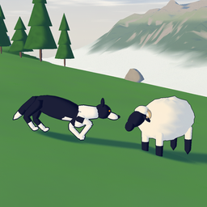
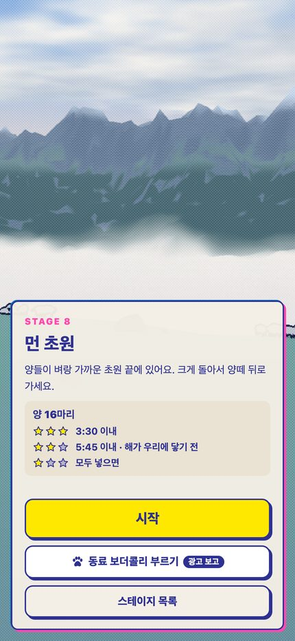
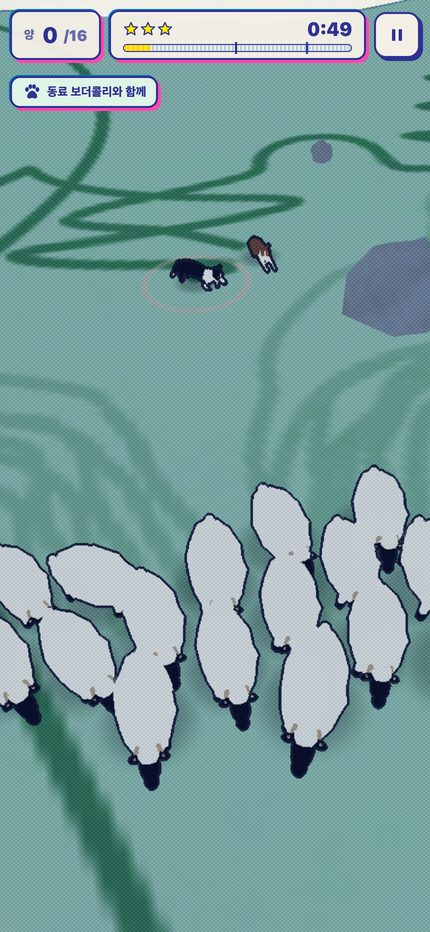
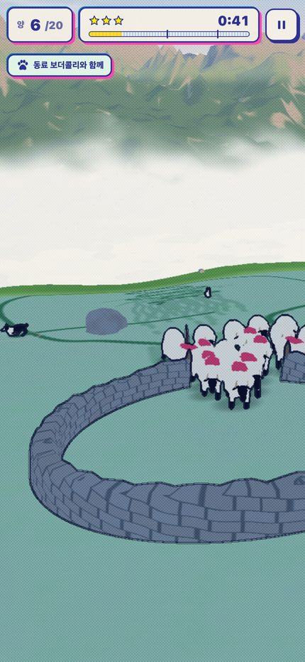
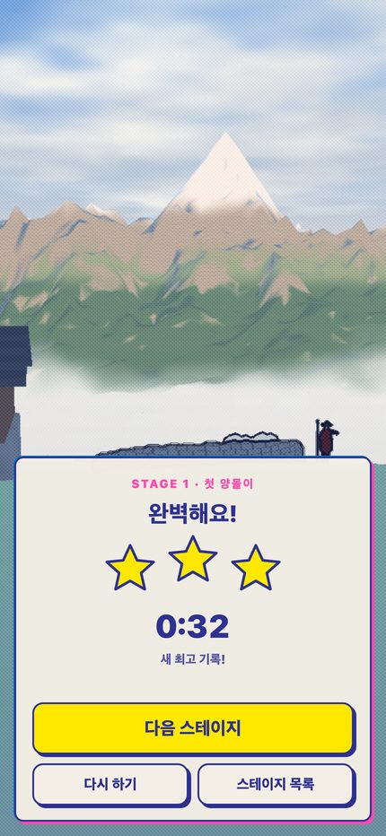

아웃런: 보더콜리 양몰이
알프스의 아침 · 손끝으로 모는 양떼
Google Play 출시 예정App Store 출시 예정
게임 소개
알프스의 이른 아침, 목동의 휘파람이 울리면 당신은 보더콜리가 됩니다. 화면을 누르고 있으면 보더콜리가 그곳으로 달려가요.
개 가까이를 누르면 몸을 낮추고 살금살금, 멀리 누르면 전속력으로 질주합니다. 흩어진 양들을 한 무리로 모아 돌담 우리로 몰아넣으세요.
- 해가 시계예요 — 해가 초원을 타고 올라와 우리에 닿기 전에 끝내면 별 두 개, 더 빨리 끝내면 별 세 개.
- 성격이 다른 양들 — 겁쟁이, 큰 뿔 숫양, 어미를 따라다니는 어린 양.
- 15개 스테이지 — 아침 초원, 안개 낀 계곡, 높은 알프스.
- 동료 보더콜리 — 막히는 스테이지에서는 광고를 보고 동료를 불러 함께 몰 수 있어요.
- 인쇄물 같은 그림 — 리소그래프 판화처럼 찍어 낸 알프스 풍경.
스크린샷



